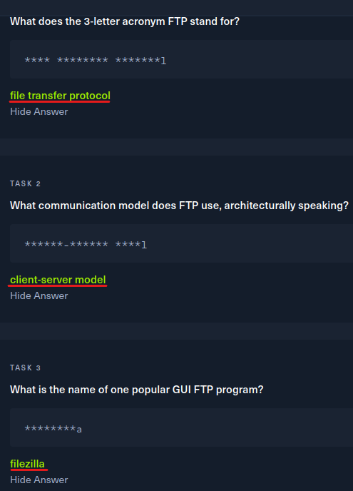
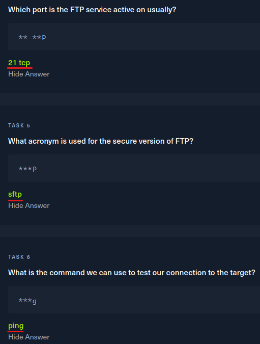

FTP
FTP
Dosya aktarım iletişim kuralı, bir veri yığınının - ASCII, EBCDIC, ve binary- bir uç aygıttan diğerine iletimi için kullanılmaktadır. Bir dosyayı FTP kullanarak başka bir TCP/IP ağı üzerindeki kullanıcıya yollamak için o ağdaki bilgisayarda geçerli bir kullanıcı ismi ve şifresi gerekmektedir

